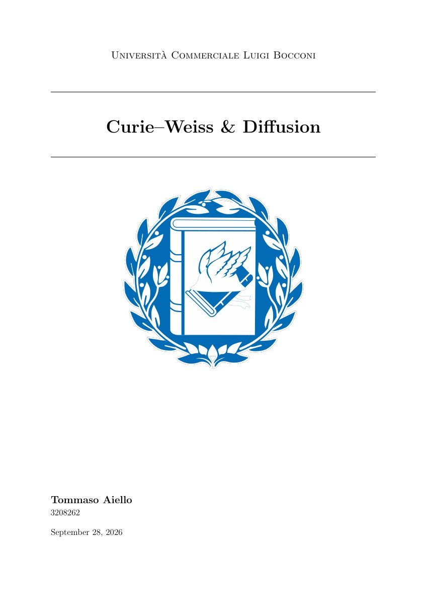

01 / Research notes
Curie–Weiss & Diffusion — Part I
Analytical and computational study of diffusion, phase selection, and hierarchical structure in a mixture-of-Boltzmann model. Analytical results and Monte Carlo experiments characterize the conditions under which noisy dynamics recover underlying structure.